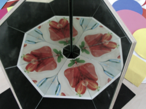

Hva skjer dersom et speil speiler seg i et annet speil?
Programvinduet til høyre viser to matematiske speil.
Matematiske speil kan vise overlappende bilder, noe som virkelige speil ikke kan.
Vinkelen mellom speilene kan styres ved hjelp av glidebryteren nedenfor.
Vi ser at figuren reflekteres gjentatte ganger.
Det endelige resultatet er svært følsomt for vinkelen mellom de to speilene. Bare dersom vinkelen er delelig med 180°,
vil de gjentatte speilbildene passe akkurat til hverandre. Dette vil være tilfelle for vinklene: 90°, 60°, 45°, 36°, 30°, osv.
|
|
|

|
Bilder laget av to fysiske speil stilt opp med en mellomliggende vinkel på henholdsvis 90°, 60°, 45° og 36°.